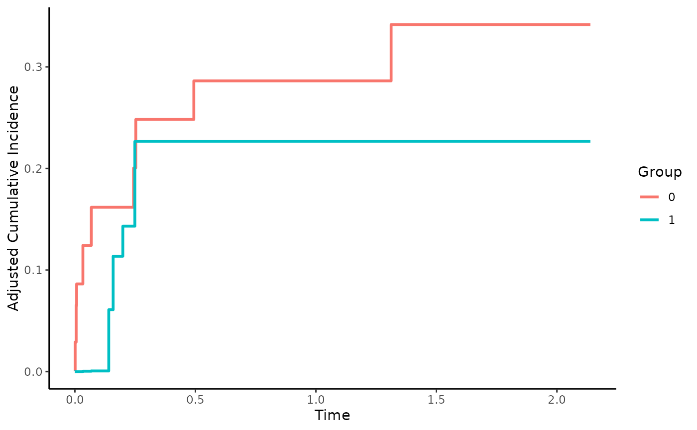

Inverse Probability of Treatment Weighted CIFs using Pseudo-Values
cif_iptw_pseudo.RdThis page explains the details of estimating inverse probability of treatment weighted cumulative incidence functions using Pseudo-Values in a competing risks setting (method="iptw_pseudo" in the adjustedcif function). All regular arguments of the adjustedcif function can be used. Additionally, the treatment_model argument has to be specified in the adjustedcif call. Further arguments specific to this method are listed below.
Arguments
- treatment_model
[required] Must be either a model object with
variableas response variable, a vector of weights or a formula which can be passed toWeightIt.- weight_method
Method used in
WeightItfunction call. Ignored iftreatment_modelis not a formula object. Defaults to"ps".- stabilize
Whether to stabilize the weights or not. Is set to
FALSEby default. Stabilizing weights ensures that the sum of all weights is equal to the original sample size. It has no effect on point estimates, only on the asymptotic variance calculations and confidence intervals.- trim
Can be either
FALSE(default) or a numeric value at which to trim the weights. IfFALSE, weights are used as calculated or supplied. If a numeric value is supplied, all weights that are bigger thantrimare set totrimbefore the analysis is carried out. Useful when some weights are extremely large.- trim_quantiles
Alternative argument to trim weights based on quantiles. Can be either
FALSE(default) to use no trimming, or a numeric vector containing exactly two values between 0 and 1. These values specify the quantiles that the weights should be trimmed at. For example, ifc(0.01, 0.99)is supplied to this argument, all weights that are lower than the 0.01 quantile of the weight distribution will be set to that quantile and all weights that are higher than the 0.99 quantile of the weight distributions will be set to the 0.99 quantile.- se_method
One of
"miller","galloway","cochrane"and"Hmisc". Specifies which kind of standard error to calculate. Defaults to"cochrane". See details.- ...
Further arguments passed to
weightit.
Details
Type of Adjustment: Requires a model describing the treatment assignment mechanism. This must be either a
glmormultinomobject. Alternatively, weights can be supplied directly or estimated usingWeightItDoubly-Robust: Estimates are not Doubly-Robust.
Categorical groups: Any number of levels in
variableare allowed. Must be a factor variable.Approximate Variance: Calculations to approximate the variance and confidence intervals are available.
Allowed Time Values: Allows both continuous and integer time.
Bounded Estimates: Estimates are not guaranteed to be bounded in the 0 to 1 probability range.
Monotone Function: Estimates are not guaranteed to be monotone.
Dependencies: This method relies on the prodlim package. The WeightIt package is also required if
treatment_modelis a formula object.
This method works by modeling the treatment assignment mechanism. Adjusted CIFs are calculated by first estimating appropriate case-weights for each observation in data. This can be done using inverse probability of treatment weights using the propensity score (usually estimated using a logistic regression model) or by some other method (see weightit). Pseudo-Values of the cause-specific CIF are then calculated for every observation in data at some points in time \(T\). Since Pseudo-Values bypass the problem of censoring, a simple weighted average of the Pseudo-Values can be taken for every \(T\). See Andersen et al. (2017) for more details on this method and Andersen and Perme (2010) for more information on Pseudo-Values in general.
The standard error of this estimator can be approximated by calculation a weighted version of the standard error estimator. Interestingly, no exact method exists in the weighted case. Four approximations are implemented which can be chosen using the se_method argument. The equations for "miller", "galloway" and "cochrane" are described and compared in Gatz and Smith (1995). "Hmisc" is the standard equation with a weight term added, as specified in the Hmisc package, and should only be used with stabilized weights (stabilize=TRUE). It is generally recommended to use bootstrap estimates instead.
Value
Adds the following additional objects to the output of the adjustedcif function:
pseudo_values: The matrix of estimated pseudo-values.weights: The final weights used in the analysis.
References
Per Kragh Andersen, Elisavet Syriopoulou, and Erik T. Parner (2017). "Causal Inference in Survival Analysis using Pseudo-Observations". In: Statistics in Medicine 36, pp. 2669-2681
Per Kragh Andersen and Maja Pohar Perme (2010). "Pseudo-Observations in Survival Analysis". In: Statistical Methods in Medical Research 19, pp. 71-99
Donald F. Gatz and Luther Smith (1995). "The Standard Error of a Weighted Mean Concentration - I: Bootstrapping Vs Other Methods". In: Atmospheric Environment 29.11, pp. 1185-1193
William G. Cochran (1977). Sampling Techniques. Vol. 3. New York: Wiley
J. N. Galloway, G. E. Likens, and M. E. Hawley (1984). "Acid Precipitation: Natural Versus Anthropogenic Components". In: Science 226, pp. 829-831
J. M. Miller (1977). A Statistical Evaluation of the U.S. Precipitation Chemistry Network. Precipitation Scavenging (edited by Semonin R. G. and Beadle R. W.) pp. 639-659. Available as CONF 74100 from National Technical Information Service, U.S. Dept. of Commerce, Springfiel, VA.
Examples
library(adjustedCurves)
if (requireNamespace("prodlim") & requireNamespace("riskRegression")) {
set.seed(42)
# simulate some data as example
sim_dat <- sim_confounded_crisk(n=50, max_t=5)
sim_dat$group <- as.factor(sim_dat$group)
# estimate a treatment assignment model
glm_mod <- glm(group ~ x1 + x3 + x5 + x6, data=sim_dat, family="binomial")
# use it to calculate adjusted CIFs
adjcif <- adjustedcif(data=sim_dat,
variable="group",
ev_time="time",
event="event",
cause=1,
method="iptw_pseudo",
treatment_model=glm_mod)
plot(adjcif, force_bounds=TRUE, iso_reg=TRUE)
# Alternatively, use custom weights
# In this example we use weights calculated using the propensity score,
# which is equal to using the glm model directly in the function
ps_score <- glm_mod$fitted.values
weights <- ifelse(sim_dat$group==1, 1/ps_score, 1/(1-ps_score))
adjcif <- adjustedcif(data=sim_dat,
variable="group",
ev_time="time",
event="event",
cause=1,
method="iptw_pseudo",
treatment_model=weights)
plot(adjcif, force_bounds=TRUE, iso_reg=TRUE)
if (requireNamespace("WeightIt")) {
# And a third alternative: use the WeightIt package
# here an example with equal results to the ones above:
adjcif <- adjustedcif(data=sim_dat,
variable="group",
ev_time="time",
event="event",
cause=1,
method="iptw_pseudo",
treatment_model=group ~ x1 + x3 + x5 + x6,
weight_method="ps")
plot(adjcif, force_bounds=TRUE, iso_reg=TRUE)
# here an example using Entropy Balancing Weighting:
adjcif <- adjustedcif(data=sim_dat,
variable="group",
ev_time="time",
event="event",
cause=1,
method="iptw_pseudo",
treatment_model=group ~ x1 + x3 + x5 + x6,
weight_method="ebal")
plot(adjcif, force_bounds=TRUE, iso_reg=TRUE)
}
}
#> Ignoring unknown labels:
#> • linetype : "Group"
#> • fill : "Group"
